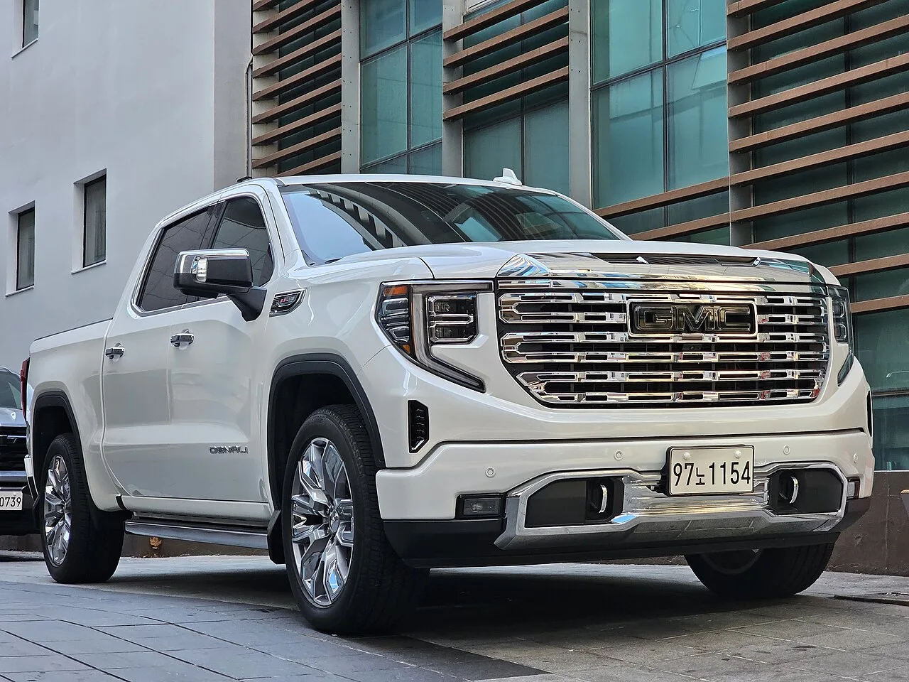
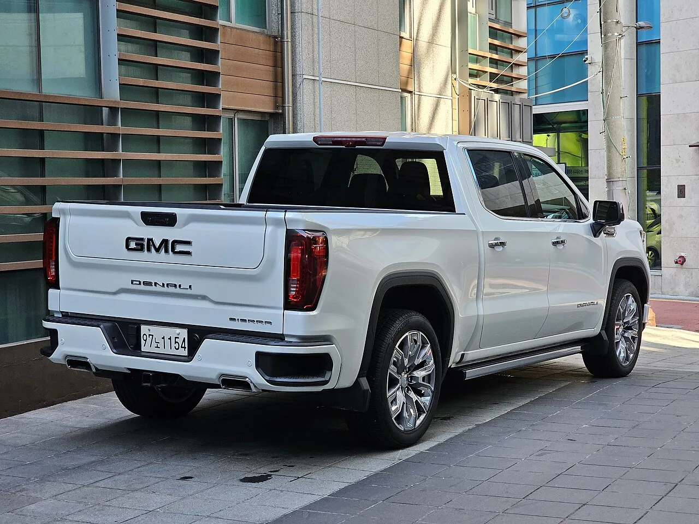
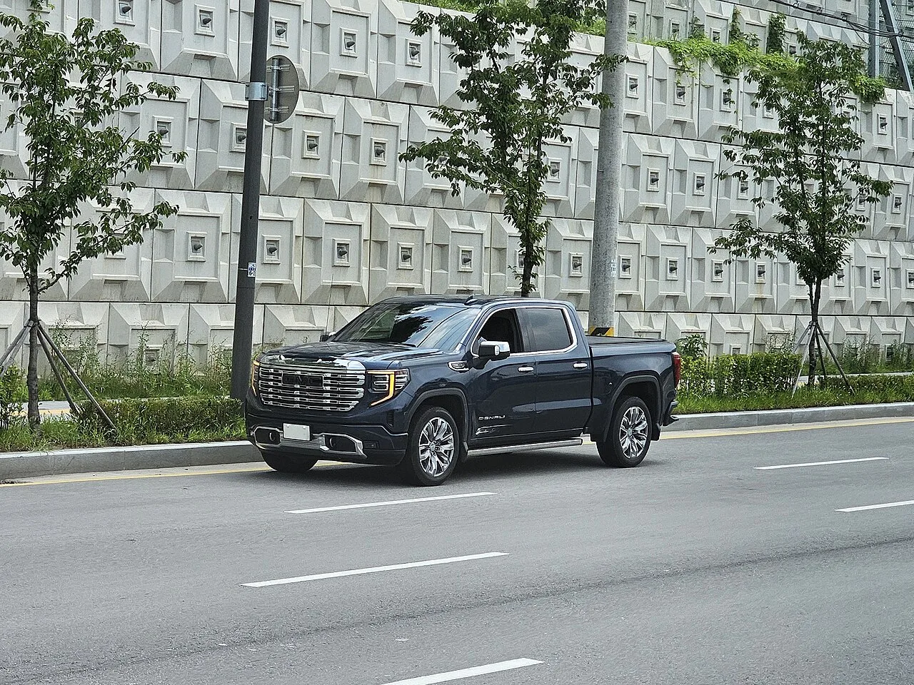

▲ 국내에서 포착된 GMC 시에라 드날리. 6.2L 자연흡기 V8을 얹고 9,420만 원부터 시작한다
GMC가 2026년형 시에라를 내놨습니다. 6.2리터 V8에 426마력, 견인 3,945kg. 픽업트럭 기사에서 늘 보던 숫자들입니다. 그런데 이 제원표에서 정작 희귀해진 항목은 배기량도 출력도 아닙니다. '자연흡기'라는 세 글자입니다.
9,420만 원. 1억 원을 넘지 않는 가격에 대배기량 자연흡기 V8을 살 수 있는 선택지가 2026년 현재 몇 개나 남아 있는지 생각해보면, 이 차의 위치가 조금 달라 보입니다.
1. 자연흡기 V8이라는 멸종 위기 조합
최근 10여 년간 자동차 엔진은 한 방향으로 움직였습니다. 배기량을 줄이고 터보를 다는 것입니다. 배출가스와 연비 규제를 통과하려면 시험 모드에서 유리한 소배기량 터보가 절대적으로 유리했기 때문입니다. 그 결과 6기통이 4기통으로, V8이 V6 터보로 대체되는 흐름이 이어졌습니다.
그런데 시에라는 그 흐름을 따라가지 않았습니다. 6.2리터, 터보 없음. 배기량으로만 힘을 냅니다.
자연흡기가 남긴 감각은 터보가 완전히 흉내내지 못하는 영역에 있습니다. 가속 페달을 밟은 만큼 정직하게 반응하고, 회전수가 올라갈수록 출력이 선형으로 따라붙습니다. 터보 특유의 반 박자 지연이나 특정 회전 구간에서 밀려드는 토크의 불균일함이 없습니다. 대신 소배기량 터보 대비 연비가 불리하고, 세금 부담도 큽니다.
여기에 GMC는 다이내믹 퓨얼 매니지먼트를 넣었습니다. 주행 상황에 따라 실린더 일부를 쉬게 해서 연료 소비를 줄이는 기술입니다. 8기통을 항상 다 쓰지는 않겠다는 절충인 셈입니다. 액티브 가변 배기시스템도 들어가는데, 이건 반대로 필요할 때 V8 특유의 배기음을 살리기 위한 장치입니다.
| 항목 | 제원 |
|---|---|
| 엔진 | 6.2L 자연흡기 V8 직분사 |
| 최고출력 | 426마력 |
| 최대토크 | 63.6kg·m |
| 변속기 | 10단 자동 |
| 구동 | 오토트랙 액티브 사륜구동 |
| 연비 기술 | 다이내믹 퓨얼 매니지먼트(실린더 휴지) |

▲ 시에라 드날리의 크롬 그릴. 전폭 2,065mm는 국내 주차 환경에서 부담이 되는 수치다
2. 전장 5,890mm — 숫자로 확인하는 현실
이 차를 살지 말지 가르는 진짜 변수는 엔진이 아니라 크기입니다. 전장 5,890mm, 전폭 2,065mm, 전고 1,950mm입니다.
기준을 하나 잡으면 감이 옵니다. 국내 일반 주차구획의 표준 규격은 너비 2.5m, 길이 5.0m입니다. 시에라는 길이만 놓고 봐도 주차선을 89cm 넘깁니다. 폭 2,065mm는 구획 안에 들어가긴 하지만 양옆으로 남는 공간이 각각 22cm 남짓이라, 문을 열고 내리는 것 자체가 쉽지 않습니다.
전고 1,950mm도 중요합니다. 국내 지하주차장 입구 높이 제한은 흔히 2.1~2.3m로 설정되지만, 오래된 건물이나 기계식 주차장은 그보다 낮은 경우가 많습니다. 여기에 루프 안테나까지 감안하면 진입 전 확인이 필요한 높이입니다.
이 차는 아파트 지하주차장을 일상적으로 쓰는 사람에게는 권하기 어렵습니다. 반대로 지상 주차나 마당, 캠핑장·작업장 접근이 주 용도라면 크기는 문제가 아니라 목적 그 자체가 됩니다.
| 항목 | 시에라 | 일반 주차구획 기준 |
|---|---|---|
| 전장 | 5,890mm | 5,000mm |
| 전폭 | 2,065mm | 2,500mm |
| 전고 | 1,950mm | 주차장 입구 제한 확인 필요 |

▲ 적재함 용량은 1,781L. 최대 견인능력은 3,945kg에 이른다
3. 3,945kg 견인 — 국내에서 이 성능을 쓸 수 있나
최대 견인능력 3,945kg은 인상적인 숫자입니다. 다만 국내에서 이 성능을 온전히 쓰려면 조건이 붙습니다.
운전면허가 첫 번째입니다. 국내 도로교통법상 총중량 750kg을 초과하는 피견인차를 끌려면 견인 관련 면허가 별도로 필요합니다. 카라반이나 대형 보트 트레일러가 여기에 해당하는 경우가 많습니다. 3,945kg이라는 능력치는 차가 낼 수 있는 최대치일 뿐, 면허 없이 그 성능을 쓸 수 있다는 뜻이 아닙니다.
속도 제한도 있습니다. 견인 주행 시에는 일반 주행과 다른 속도 규정이 적용되고, 고속도로 이용에도 제약이 따릅니다.
그래서 시에라의 견인 사양은 실사용보다 여유의 지표로 읽는 편이 정확합니다. 실제로 4톤 가까운 무언가를 끌 일이 없더라도, 그만한 여력을 가진 차대와 파워트레인이라는 뜻이기 때문입니다. GMC가 넣은 히치뷰 카메라, 트레일러 가이드라인, 트레일러 브레이크시스템은 이 용도를 실제로 쓰는 시장을 겨냥한 장비들입니다.
적재함 용량 1,781L는 숫자만으로는 감이 잘 오지 않는데, 대형 SUV의 2·3열을 모두 접었을 때 나오는 공간을 웃도는 수준입니다. 다만 픽업 적재함은 덮개가 없으면 비바람과 도난에 노출되므로, 국내에서 실사용하려면 토노커버나 캐노피 추가를 함께 계산해야 합니다.

▲ 시에라 드날리의 테일게이트. 스칼렛 나이트 에디션은 여기에 스텝 라이팅이 추가된다
4. 40.7인치 — 실내는 트럭이 아니다
드날리는 시에라 라인업의 최상위 트림입니다. 실내를 보면 이 차가 작업용 트럭이 아니라 대형 럭셔리 세단의 자리를 노린다는 게 분명해집니다.
디스플레이 구성이 상징적입니다. 12.3인치 디지털 계기판, 13.4인치 터치스크린, 그리고 15인치 헤드업 디스플레이까지 합쳐 총 40.7인치입니다. 특히 15인치 HUD는 대형 프리미엄 세단에서도 흔치 않은 크기입니다. 여기에 천연가죽 시트와 보스 프리미엄 사운드시스템이 들어갑니다.
2열 레그룸 1,102mm도 눈여겨볼 숫자입니다. 크루 캡 구조 덕분에 뒷좌석이 임시 공간이 아니라 제대로 된 승용 공간으로 확보됩니다. 쇼퍼드리븐 세단과 비교해도 밀리지 않는 수준입니다.
승차감 쪽에는 리얼타임 댐핑 어댑티브 서스펜션이 들어갑니다. 픽업트럭의 고질적 약점인 '짐이 없을 때 뒤가 튀는' 현상을 완화하는 장치입니다. 프레임 바디 픽업이 승용차 같은 승차감을 낼 수는 없지만, 이 장비의 유무에 따른 차이는 큽니다.

▲ 국내 도로 위의 시에라 드날리. 승용차와 나란히 서면 체급 차이가 뚜렷하다
5. 스칼렛 나이트 에디션 — 220만 원의 값어치
이번에 추가된 드날리 스칼렛 나이트 에디션은 9,640만 원으로, 기본 드날리보다 220만 원 비쌉니다.
차이는 전용 액세서리입니다. 빨간색 LED GMC 엠블럼, GMC 로고를 바닥에 비추는 프로젝션 퍼들램프, 머드가드, 테일게이트 스텝 라이팅, LED 도어 실 플레이트가 들어갑니다.
파워트레인이나 주행 관련 사양의 변화는 없습니다. 순수하게 외장 연출과 야간 조명 요소를 더한 구성입니다. 이런 항목들을 개별 액세서리로 구매하고 장착 공임까지 계산하면 220만 원이 특별히 비싼 편은 아니지만, 조명 연출에 관심이 없다면 굳이 올릴 이유도 없습니다. 기본 드날리와 성능은 완전히 동일합니다.
| 트림 | 가격 | 차이 |
|---|---|---|
| 드날리 | 9,420만 원 | 기준 |
| 드날리 스칼렛 나이트 에디션 | 9,640만 원 | +220만 원 (외장·조명 전용 액세서리) |
6. 9,420만 원이라는 자리
국내 럭셔리 픽업 시장에서 시에라의 가격은 중간보다 아래입니다. 램 1500 텅스텐이 1억2,400만 원, 리비안 R1T가 1억6,000만 원 수준인 것과 비교하면 3,000만 원 이상 아래에 자리합니다. 픽업트럭이 미국에서 어떻게 부의 상징이 됐는지는 앞서 별도로 정리한 바 있습니다.
정리하면, 2026년형 시에라의 의미는 426마력이라는 출력보다 그 출력을 만드는 방식에 있습니다. 터보로 손쉽게 숫자를 올리는 대신 6.2리터라는 배기량을 그대로 유지했고, 그 조합을 1억 원 아래 가격에 내놓았습니다. 배출가스 규제가 더 조여올수록 이런 구성은 남아 있기 어렵습니다.
다만 이 차를 고려한다면 감성보다 먼저 확인해야 할 것들이 있습니다. 주차 환경(전장 5,890mm), 연료비와 세금(6.2L 배기량), 견인 면허(750kg 초과 시), 그리고 정비망 접근성입니다. 이 네 가지가 정리되는 사람에게, 지금 시점에 이만한 조합은 선택지가 많지 않습니다.